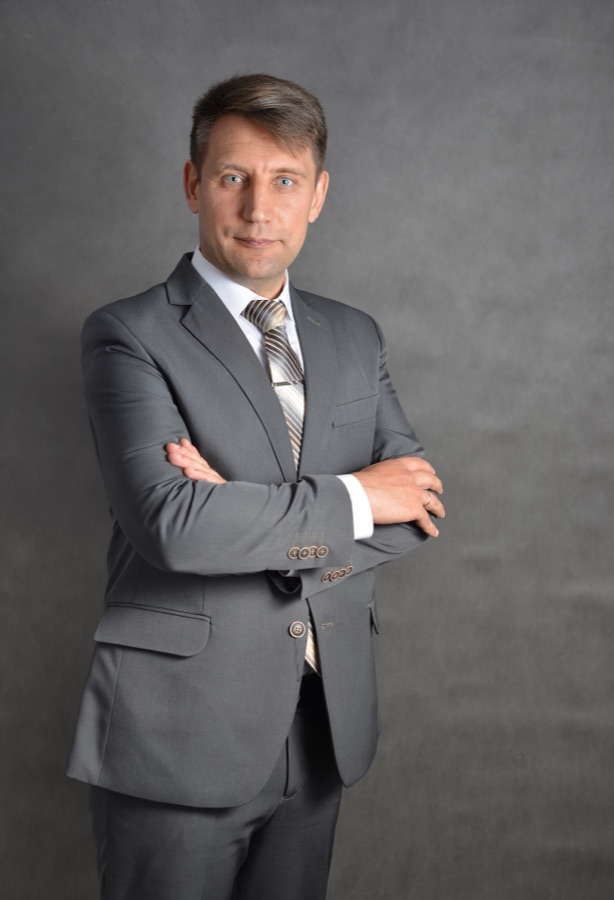
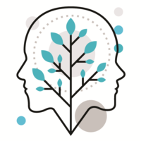
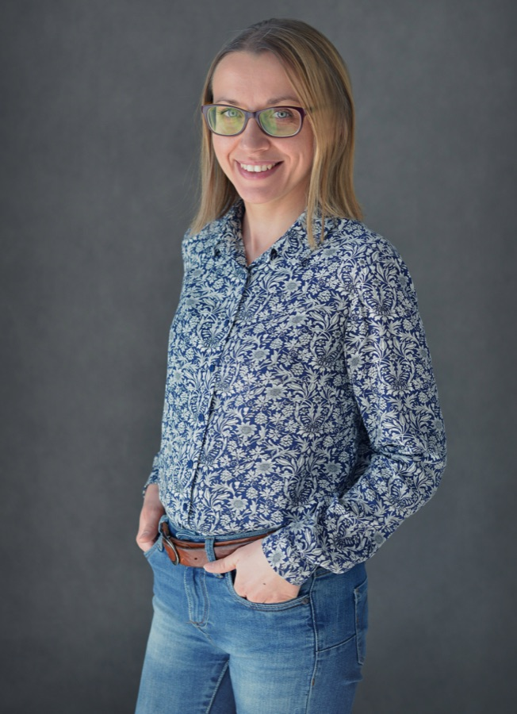
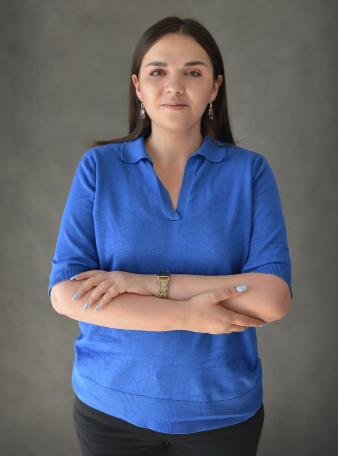
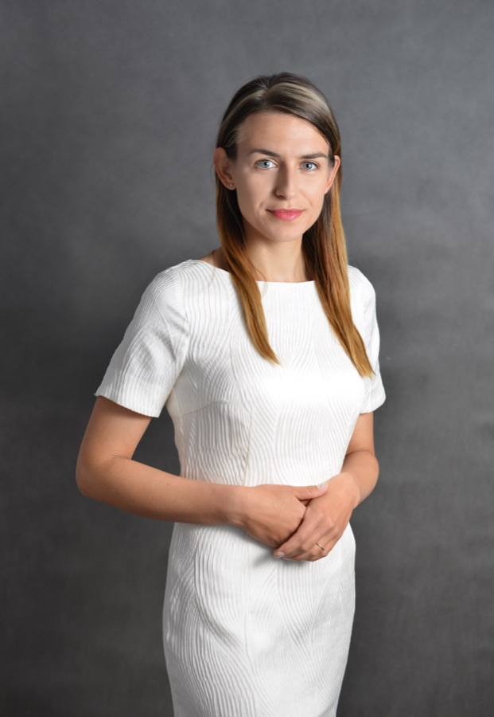

Psycholog, psychoterapia i diagnoza dla dzieci, młodzieży i dorosłych. Dwa gabinety we Wrocławiu i on-line.
Zacznij od osoby, nie od nazwy usługi. Pokażemy specjalistów i terapie, które naprawdę pasują.

Psycholog dziecięcy, diagnoza ADHD i autyzmu, EEG Biofeedback, logopeda.
→Emocje, szkoła, lęk, relacje z rówieśnikami.
→Psychoterapia, DIVA-5, terapia par i rodzin.
→Konsultacja psychologiczna przez internet — bez dojazdu, w bezpiecznym miejscu.
→


32 opinie w Google
„Przyszliśmy z dużą niepewnością i wieloma pytaniami, ale od początku czuliśmy się zaopiekowani. Wreszcie wiemy, w jakim kierunku iść.”
Natalia G. · badanie QEEG
Resztę zrobimy razem. Zadzwoń albo zarezerwuj termin w Booksy — zajmie to minutę.